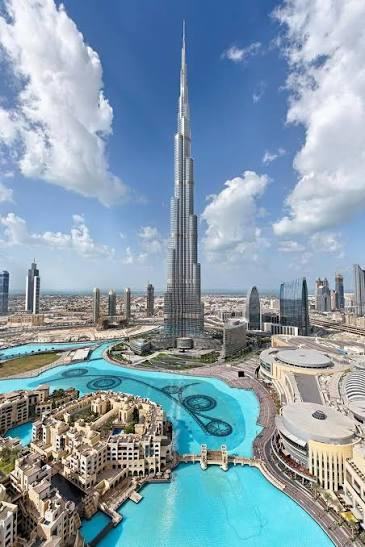
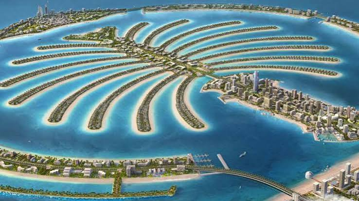
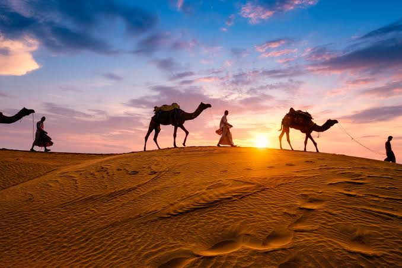

Explore Dubai
Discover the iconic attractions, rich culture, and exciting activities that make Dubai one of the world's most popular travel destinations.
Burj Khalifa

Burj Khalifa is the world's tallest building, standing at an incredible 828 metres. An iconic symbol of Dubai's ambition and innovation, it offers breathtaking panoramic views of the city, the Arabian Gulf, and the surrounding desert. Whether you admire it from below or visit its observation decks, it's an experience you shouldn't miss!
Palm Jumeirah

Palm Jumeirah is one of Dubai’s most iconic landmarks. A breathtaking man-made island shaped like a palm tree, surrounded by turquoise waters and lined with luxurious hotels, beaches, restaurants, and entertainment experiences.
Dubai Desert Safari

Dubai Desert Safari is an unforgettable adventure into the golden Arabian desert, where visitors can experience thrilling dune rides, breathtaking sunsets, camel rides, sandboarding, and traditional Arabian entertainment. It's the perfect escape from the city's skyscrapers into the beauty of the desert.
Culture and Cuisine
Dubai combines traditional Emirati culture with a modern international lifestyle. Visitors can experience traditional markets, Arabic hospitality, and cultural festivals throughout the year.
Popular Emirati dishes include Machboos, Harees, and Luqaimat. Dubai also offers cuisines from around the world.
Activities
- Desert safari adventures.
- Luxury yacht cruises along Dubai Marina.
Learn More
Visit the official Dubai tourism website: Visit Dubai